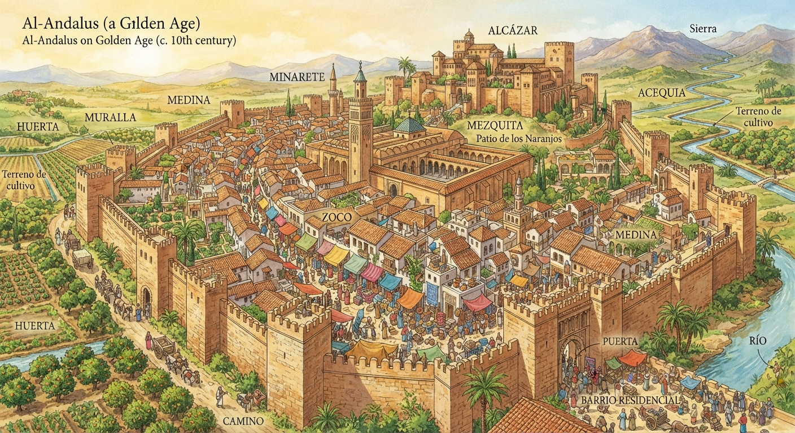

Al-Ándalus
1. La llegada del islam a la península ibérica
A comienzos del siglo VIII, el Imperio islámico se había extendido por numerosos territorios y estaba gobernado por un califa que era el jefe político y religioso. Cada provincia o emirato estaba dirigido por un emir.
En el año 711, un ejército musulmán dirigido por Tariq cruzó el estrecho de Gibraltar y llegó a la península ibérica. En aquel momento, el reino visigodo estaba gobernado por el rey Rodrigo, que se enfrentó a los musulmanes en la batalla de Guadalete. Los visigodos fueron derrotados y, poco después, los musulmanes conquistaron gran parte de la península.
El territorio conquistado recibió el nombre de Al-Ándalus y su capital fue Córdoba, que llegó a convertirse en una de las ciudades más importantes de Europa.
2. Las etapas de Al-Ándalus
A lo largo de los siglos, Al-Ándalus pasó por diferentes etapas:
- Emirato (711-929): Al-Ándalus era gobernado por un emir que dependía inicialmente del califa.
- Califato (929-1031): Córdoba se convirtió en un califato independiente, gobernado por un califa, Abderramán III.
- Reinos de taifas (1031-1212): el territorio se dividió en pequeños reinos independientes (taifas) que se enfrentaron entre sí. Los reinos cristianos se enfrentaron a ellos y vencieron en la batalla de Las Navas de Tolosa.
- Reino nazarí (1212-1492): fue el último territorio musulmán de la península, con capital en Granada. En 1492, los Reyes Católicos lo conquistaron y esto supuso el fin de al-Ándalus.
3. La vida en Al-Ándalus
La sociedad de Al-Ándalus estaba formada por personas de diferentes religiones y culturas. El islam era la religión principal. Los musulmanes rezaban en las mezquitas y seguían las enseñanzas del Corán.
Convivían personas de distintas religiones:
- Musulmanes: grupo más poderoso. Ocupaban cargos de gobierno.
- Muladíes: fieles cristianos convertidos al islam.
- Mozárabes: cristianos.
- Judíos: grupo minoritario. Vivían en barrios separados llamados juderías.
En cuanto al modelo de vida, la mayoría de la población vivía en el campo. Destacaron la agricultura y los sistemas de riego, que permitieron cultivar productos como arroz, naranjas y algodón, así como las acequias y norias.
También habían grandes ciudades que tenían calles estrechas, mercados (zocos), baños públicos y mezquitas. En ellas residían las personas que se dedicaban al comercio y la artesanía. Las ciudades estaban rodeadas de murallas y en el alcázar (palacio) residía el gobernador. En el centro estaba el zoco.
